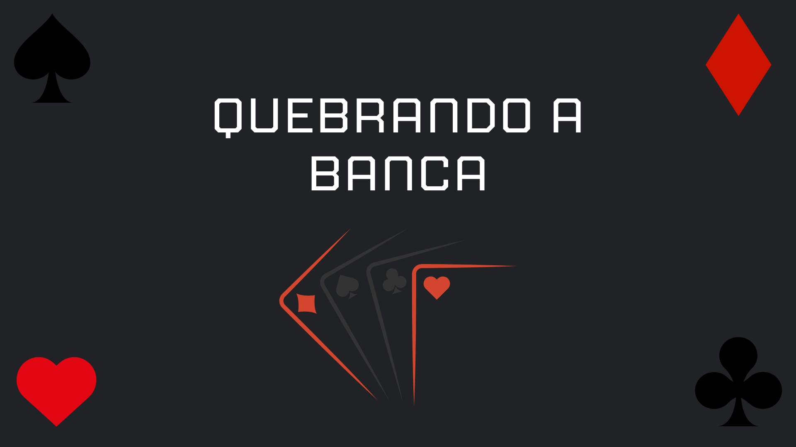
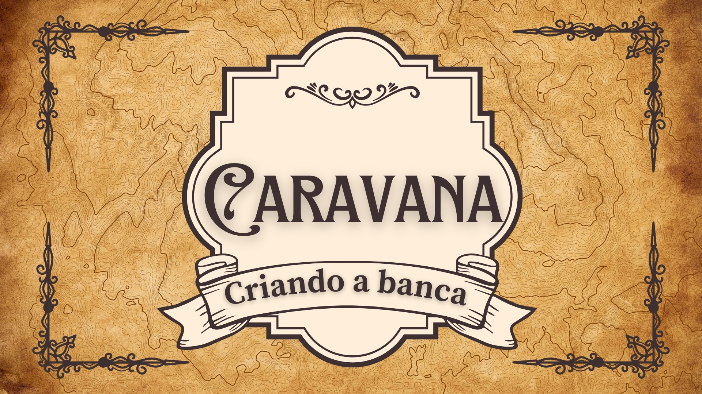

Inicio
Ensino médio
Tecnico
PPE
Matemática
Trabalhos
Para esse trabalho nos foi passado um filme em sala de aula chamado “Quebrando a banca”, com esse filme tivemos que responder algumas perguntas sobre o mesmo. Eu gostei bastante dessa atividade pois o filme foi muito legal e aborda temas diferentes.
Quebrando a banca
Habilidades: C5, H31 e H32.


Criando a banca
Habilidades: C5, H30 e H31.
Esse trabalho é a continuação do trabalho “Quebrando a banca” , só que agora a gente teve que fazer um jogo em que as regras têm algo a ver com a matéria aprendida junto com o filme. Eu gostei muito dessa atividade pois criar o jogo do meu grupo foi muito divertido.